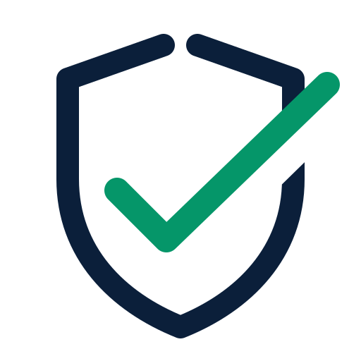
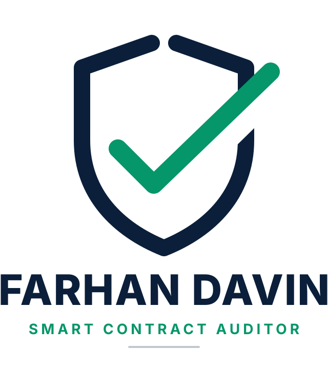
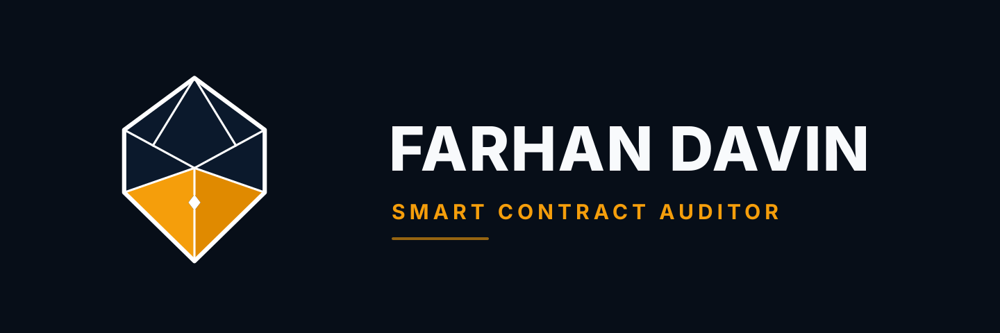
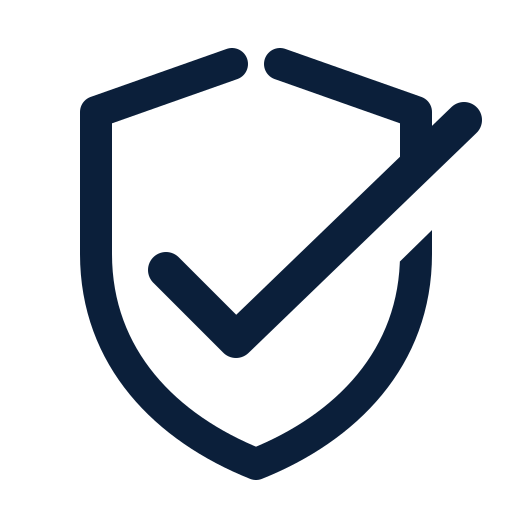
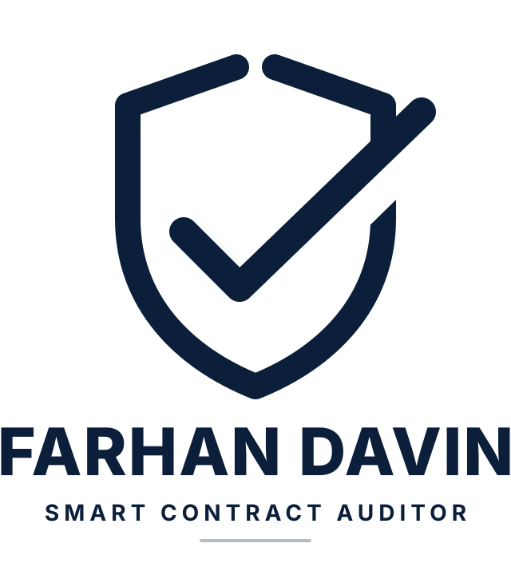

Simbol Murni & Identitas Visual "Open Aegis & Verified Ray" untuk Dokumen Laporan Keamanan Smart Contract (Audit Report PDF)
Outline perisai berongga (hollow wireframe) tanpa isian padat. Menegaskan audit glass-box: temuan diungkap apa adanya tanpa rahasia.
Siluet dasar perisai (aegis) kokoh yang melindungi protokol, likuiditas, dan kepercayaan klien dari eksploitasi web3.
Garis verified ray (centang presisi) yang tegas, melambangkan komitmen tepat waktu dan hasil audit yang dapat diandalkan 100%.
Ujung centang menembus keluar batas perisai ke arah kanan atas, melambangkan standar kualitas kerja yang melampaui batas minimum.
Bukaan mahkota atas (open aperture) dan lengkungan ramah, mencerminkan kemampuan menyederhanakan kode rumit menjadi laporan yang mudah dipahami klien.
Perisai tidak terkunci rapat seperti benteng angkuh, melainkan terbuka dan menyambut kolaborasi hangat dengan para pengembang.
Geometri presisi berbasis golden ratio, ketebalan garis seragam, dan tata letak simetris bebas dari ornamen berlebihan.
Simbol murni tanpa huruf inisial di dalamnya, langsung dapat dikenali baik pada favicon 16px hingga sampul laporan cetak A4.

Ikon murni tanpa huruf/teks. Sangat cocok untuk favicon web, avatar CodeHawks/GitHub, dan stempel verifikasi.

Simbol di atas dengan wordmark Farhan Davin di bawah. Format standar untuk halaman judul (title page) Eisvogel/Pandoc.

Simbol di kiri dan wordmark di kanan. Pilihan ideal untuk header halaman laporan, banner profil LinkedIn, dan website.

Satu warna murni untuk keperluan cetak dokumen hitam-putih, cap resmi, atau watermark transparan.

Latar belakang gelap dengan garis putih dan emerald menyala. Optimal untuk slide presentasi dan tema dark-mode.

Format sampul formal bersatu warna untuk publikasi jurnal atau dokumen legalitas resmi.
Untuk menyematkan logo ini ke sampul laporan audit PDF, gunakan kode berikut di file template Markdown/LaTeX laporan Anda:
\begin{titlepage}
\centering
\begin{figure}[h]
\centering
% Gunakan versi stacked untuk sampul tengah, atau audit-symbol.pdf untuk lambang saja
\includegraphics[width=0.45\textwidth]{brand/audit-logo-stacked.pdf}
\end{figure}
\vspace*{1.2cm}
{\Huge\bfseries [Nama Protocol] Security Audit Report\par}
\vspace{0.6cm}
{\Large\color{gray} Version 1.0\par}
\vspace{1.5cm}
{\Large\itshape Lead Security Auditor: Farhan Davin\par}
\vfill
{\large \today\par}
\end{titlepage}